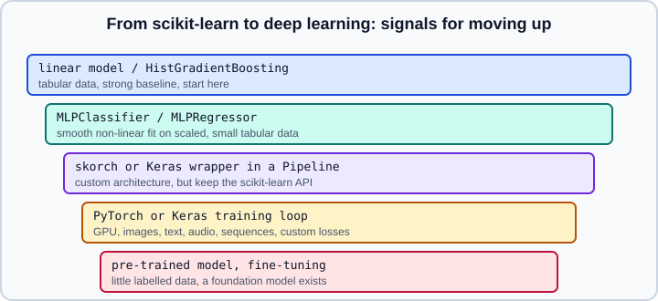

From scikit-learn to Deep Learning
|
This content was generated with the assistance of AI and should be verified against the official documentation before being relied on in production. |
scikit-learn is the right tool for most tabular problems, and its neural network estimators are a convenient baseline. At some point a project needs things a stack of dense layers cannot provide. This page lists those limits and signals concretely, shows a fast way to measure whether a neural network is even worth trying, and describes the bridges between scikit-learn and the deep learning frameworks. The full decision guide across all frameworks is Choosing a Framework; this page is its scikit-learn-side companion.
Examples were run on Python 3.13 with scikit-learn 1.9.1, PyTorch 2.15.0 (CPU), skorch 1.4.0 and Keras 3.15.1 on the TensorFlow 2.21.0 backend on 2026-10-31.

What sklearn.neural_network cannot do
The user guide states that the module is not intended for large-scale applications and has no GPU support. Beyond scale, the design leaves out:
-
Other layer types: convolutions, recurrent layers, attention, embeddings, normalisation layers, residual connections. Only fully connected layers exist (see Neural Network Fundamentals, Convolutional Neural Networks and Attention & Transformers).
-
Regularisation tools: no dropout, only the L2 penalty
alphaand early stopping (see Generalization & Regularization). -
Custom losses and outputs: cross-entropy for classification and squared error for regression are fixed.
-
Custom training procedures: no callbacks, gradient clipping, mixed precision, checkpoints, learning-rate warm-up, multi-GPU or distributed training (see Training Deep Networks, Hardware & Mixed Precision and Distributed Training).
-
Pre-trained models: no way to load or fine-tune one (see Transfer Learning & Foundation Models).
-
Raw unstructured data: the estimators take a 2-D numeric matrix; images, audio and text must first be turned into feature vectors.
Signals that you should move
| Signal | Why a framework helps |
|---|---|
Inputs are images, audio, video, long text or graphs |
Convolutional, recurrent and attention architectures exploit structure that an MLP on flattened inputs ignores. A pre-trained model usually beats anything trained from scratch. |
A foundation model exists for the task |
Fine-tuning gives better results with far less labelled data than any model trained in scikit-learn. |
The dataset or model does not fit in memory or trains too slowly on a CPU |
GPUs, mixed precision and data loaders (see Datasets & DataLoader) are framework features. |
You need a custom loss, a multi-task head or a custom architecture |
Frameworks make a new loss or layer a few lines of code and autograd takes care of the gradients. |
You must export to a mobile, browser or accelerator runtime |
Frameworks have dedicated export paths (see Exporting to ONNX and LiteRT). |
Training must be monitored, resumed and reproduced at scale |
Callbacks, checkpoints, distributed strategies and experiment tracking (see Experiment Tracking & MLOps). |
Equally important are the signals that you should not move yet. On tabular data with a few thousand to a few million rows, gradient boosted trees are usually at least as accurate as a neural network and far cheaper to tune (see Tabular Data & Gradient Boosting and Gradient Boosting & HistGradientBoosting). A neural network that does not beat a tuned tree model by a clear margin is extra maintenance for nothing.
Measure before you move
The cheapest decision aid is a cross-validated comparison on the same folds, with a linear baseline, a boosted model and an MLP. If the MLP is not ahead, a deeper network in PyTorch is unlikely to be the fix.
from sklearn.datasets import make_classification
from sklearn.ensemble import HistGradientBoostingClassifier
from sklearn.linear_model import LogisticRegression
from sklearn.model_selection import cross_val_score
from sklearn.neural_network import MLPClassifier
from sklearn.pipeline import make_pipeline
from sklearn.preprocessing import StandardScaler
X, y = make_classification(
n_samples=3000, n_features=20, n_informative=8, n_redundant=4,
n_clusters_per_class=3, flip_y=0.03, random_state=0,
)
candidates = {
"logistic regression": make_pipeline(StandardScaler(), LogisticRegression(max_iter=1000)),
"HistGradientBoosting": HistGradientBoostingClassifier(random_state=0),
"MLP (64, 32)": make_pipeline(
StandardScaler(),
MLPClassifier(hidden_layer_sizes=(64, 32), early_stopping=True, max_iter=300, random_state=0),
),
}
for name, estimator in candidates.items():
scores = cross_val_score(estimator, X, y, cv=5)
print(f"{name:22s} {scores.mean():.3f} +/- {scores.std():.3f}")This printed 0.810 for logistic regression, 0.915 for HistGradientBoostingClassifier and 0.890 for the MLP on this synthetic data set. These numbers describe only this toy problem; they are not a general ranking, and the point is the procedure. For a fair comparison tune each candidate (see Grid, Randomized & Halving Search) and use appropriate metrics (see Metrics & Scoring).
Bridges that keep the scikit-learn API
The official "Related Projects" page lists libraries that expose neural networks through the scikit-learn estimator API, so that you can keep pipelines, cross-validation and grid search:
-
skorch wraps a PyTorch
nn.Moduleas a scikit-learn compatible estimator (NeuralNetClassifier,NeuralNetRegressor). You write the module in PyTorch (see nn.Module) and skorch providesfit,predictandget_params. -
Keras 3 scikit-learn wrappers live in
keras.wrappers:SKLearnClassifier,SKLearnRegressorandSKLearnTransformer. Each takes a compiled Keras model, or a callable that builds one, pluswarm_start,model_kwargsandfit_kwargs. -
SciKeras is described on the Related Projects page as the successor of the old
tf.keras.wrappers.scikit_learn. Treat it as the legacy path now that Keras 3 has its own wrappers; check its release status before adopting it.
A skorch example:
import numpy as np
import torch
from torch import nn
from skorch import NeuralNetClassifier
from sklearn.datasets import load_digits
from sklearn.model_selection import cross_val_score
from sklearn.pipeline import make_pipeline
from sklearn.preprocessing import StandardScaler
class Net(nn.Module):
def __init__(self, n_hidden=64, dropout=0.2):
super().__init__()
self.body = nn.Sequential(
nn.LazyLinear(n_hidden), nn.ReLU(), nn.Dropout(dropout), nn.Linear(n_hidden, 10),
nn.Softmax(dim=-1),
)
def forward(self, x):
return self.body(x) # probabilities: skorch's default criterion (NLLLoss) takes their log
X, y = load_digits(return_X_y=True)
X = X.astype(np.float32) # PyTorch expects float32 and int64 labels
y = y.astype(np.int64)
net = NeuralNetClassifier(Net, max_epochs=20, lr=0.01, batch_size=64, module__n_hidden=64,
iterator_train__shuffle=True, verbose=0)
pipe = make_pipeline(StandardScaler(), net)
print(cross_val_score(pipe, X, y, cv=3).mean())This printed a mean accuracy of 0.762; the plain SGD optimiser with lr=0.01 and 20 epochs is far from tuned. Two cautions apply. PyTorch layers expect float32; StandardScaler keeps float32 input as float32, which is why X is converted before the pipeline, but a step that returns float64 needs a FunctionTransformer that converts back. And the module’s output must match the criterion: the default NeuralNetClassifier criterion is NLLLoss applied to the log of the module output, hence the softmax layer above; with criterion=nn.CrossEntropyLoss the module returns logits instead.
A Keras wrapper example following the pattern in the Keras API reference (it uses the default TensorFlow backend):
import keras
from keras.wrappers import SKLearnClassifier
from sklearn.datasets import load_digits
from sklearn.model_selection import cross_val_score
from sklearn.pipeline import make_pipeline
from sklearn.preprocessing import StandardScaler
def build_model(X, y, n_hidden=64):
# the callable receives X and y as keyword arguments, plus anything in model_kwargs;
# y arrives one-hot encoded by the wrapper, shape (n_samples, n_classes)
n_classes = y.shape[1] if y.ndim > 1 else 1
model = keras.Sequential([
keras.layers.Input(shape=(X.shape[1],)),
keras.layers.Dense(n_hidden, activation="relu"),
keras.layers.Dense(n_classes, activation="softmax"),
])
model.compile(optimizer="adam", loss="categorical_crossentropy", metrics=["accuracy"])
return model
X, y = load_digits(return_X_y=True)
est = SKLearnClassifier(model=build_model, model_kwargs={"n_hidden": 64}, fit_kwargs={"epochs": 20, "verbose": 0})
pipe = make_pipeline(StandardScaler(), est)
# clone() in Keras 3.15 drops fit_kwargs, so pass the fit arguments through cross_val_score
fit_params = {"sklearnclassifier__epochs": 20, "sklearnclassifier__verbose": 0}
print(cross_val_score(pipe, X, y, cv=3, params=fit_params).mean())This printed a mean accuracy of 0.943 (plus a progress bar from each predict call). SKLearnClassifier one-hot encodes y before calling the builder, so the builder reads the number of classes from y.shape[1] and compiles with categorical_crossentropy; sparse_categorical_crossentropy fails with a shape error. In Keras 3.15.1 the wrapper’s __sklearn_clone__ keeps model, warm_start and model_kwargs but drops fit_kwargs, so a cloned estimator (every fold of cross_val_score, every candidate of a search) trains for a single epoch with the default verbosity. Passing the fit arguments as params= with the pipeline step prefix, as above, avoids it. The wrapper clones a Model instance before fitting unless warm_start=True, which is what lets scikit-learn’s clone and cross-validation work. For installation, wrappers in more depth and the ecosystem as a whole see Using scikit-learn with PyTorch & Keras.
Keeping scikit-learn in the loop after you move
Moving to a framework does not mean abandoning scikit-learn:
-
Preprocessing and evaluation in scikit-learn (splitters, encoders, scalers, metrics) stay useful; persist the fitted preprocessing together with the model (see Model Persistence and Security in scikit-learn).
-
Features from a deep model (embeddings from a pre-trained encoder) can feed a scikit-learn classifier, often a strong and cheap approach (see Embeddings & Representation Learning).
-
Interchange: a scikit-learn pipeline and a neural model can both be exported to ONNX and served by one runtime (see ONNX & Model Interoperability).
-
Array API: some scikit-learn estimators can run on PyTorch tensors on a GPU through the experimental Array API support (see Array API and GPU Support (Experimental)).
Where to start in each framework
-
PyTorch: installation, the training loop and a CNN tutorial.
-
Keras and TensorFlow: installation, Keras Overview and Sequential & Functional models.
-
How the choice plays out for a whole project: Problem Framing & ML Projects.
-
The sibling pages in this section: Neural Networks: MLPClassifier & MLPRegressor and HistGradientBoosting vs XGBoost, LightGBM & CatBoost.